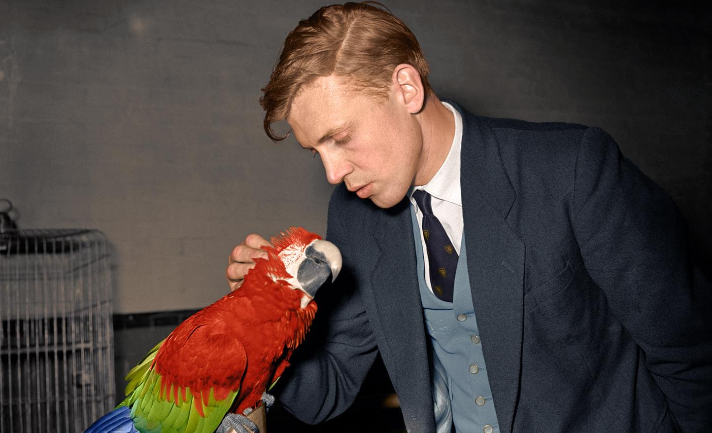

A young David Attenborough petting a green-winged macaw
Sir
David Frederick Attenborough OM CH CVO CBE FRS FLS FZS FSA FRSGS (/ˈætənbrə/; born 8 May 1926) is an English broadcaster and natural historian. He is best known for writing and presenting, in conjunction with the BBC Natural History Unit, the nine natural history documentary series forming the Life collection that together constitute a comprehensive survey of animal and plant life on Earth.
Childhood
- Born on 8 May 1926
- Grew up on campus where his father was principal
- Has two brothers (both deceased), Richard (actor), and bo
- Spent a lot of time collecting fossils when he was young, created a little museum in his house
- Jacquetta Hawkes, an archaeologist, admired his collection, and sent him a dried sea horse, and some artefacts
- Received a fire salamander for his 8th birthday
- At the age of 10, went to a lecture by Grey Owl, who inspired him in preservation
- At 11, sold newts to his father's university
- Aged 13, disappeared for two weeks, collecting fossils at Lake District
Early Adulthood
- Studied at Clare College, Cambridge
- Served in the Home Guard during WW2, afterwards called up for national service where he served in the Royal Navy for two years
- Decided he didn't want to study for a doctorate
- 1950 Married Jane Elizabeth Ebsworth Oriel, who gave birth to their son Robert in 1951
- Got a job in publishing, which he found 'excruciatingly boring'
- When he first applied for a job at the BBC he was turned down
BBC Career
- 1953 - The Pattern of Animals - the first natural history programme he produced
- 1954 - Zoo Quest, David travels to Sierra Leone to try and capture a crow that not many people have seen alive, Picathartes Gymnocephalus
- Saved an orangutan from a hunter in Borneo
- 1964 BBC 2 launches
- David employed as an editor, commissioning a wave of new programmes (including Monty Python's Flying Circus!)
- Resigned as Director of Programmes because he wanted to focus on his work filming animals
- Eastwards with Attenborough - his first natural history documentary after resigning
- 1979 Life on Earth - 13-part series that took three years to film, watched by 500 million people worldwide
- The Living Planet - his next major series, another international success
- Trials of Life showed certain scenes for the first time in history (chimpanzees hunting colobos monkeys in a team, killer whales filmed hunting sea lions)
- The Life of Birds took three years to make, during which he travelled to 42 countries; includes the now iconic footage of the lyrebird mimicking other sounds
- The Blue Planet took five years to make; became the best selling non-film DVD of all time
- Life of Mammals involved groundbreaking scenes, usage of infrared cameras
- Planet Earth took five years to make, the most expensive documentary ever produced by the BBC at the time; includes the first ever video of snow leopards
- 2010s witnessed some of the biggest documentaries the BBC has produced: Frozen Planet, Africa, Blue Planet II, Planet Earth II
List of notable documentaries
- 1979 - BBC and its co-producer Turner Broadcasting signed a deal to produce Life on Earth
- 1984 - The Living Planet
- 1990 - The Trials of Life
- 1993 - Life in the Freezer
- 1995 - The Private Life of Plants
- 1998 - The Life of Birds
- 2002 - The Life of Mammals
- 2005 - Life in Undergrowth
- 2008 - Life in Cold Blood
- 2001 - The Blue Planet
- 2006 - Planet Earth
- 2009 - Life
- 2016 - Planet Earth 2
- 2017 - Blue Planet 2
- 2019 - Our Planet
David in Numbers
- 92 years old
- 115 documentaries made or narrated
- 26 books written
- 14.01 million people watched Blue Planet episode 1 - the highest viewing figure
- 8 postnominal honours - David holds more titles than any other person (OM CH CVO CBE FRS FLS FZS FSA FRSGS)
- 20 different species, and one genus, have been named after Attenborough, putting him in third place of the all time list
- 30 honorary degrees from British universities, and three honorary fellowships